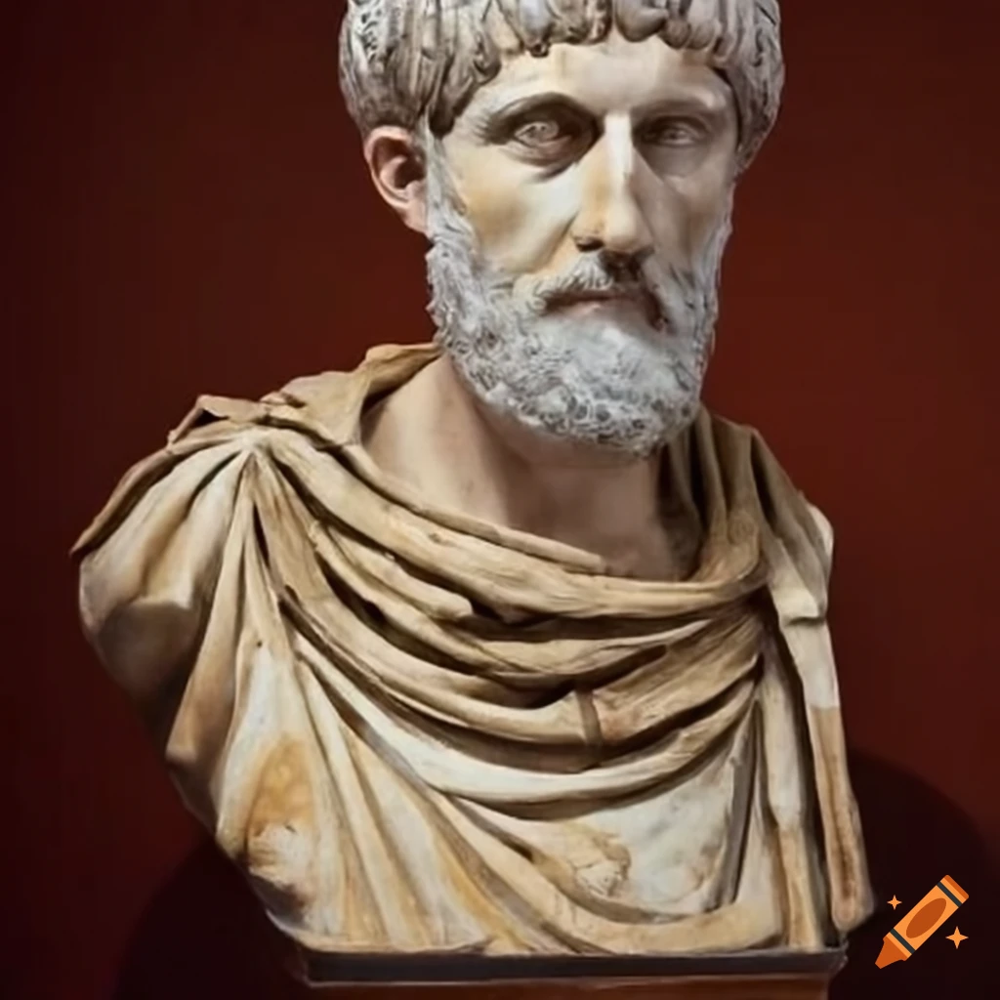

Welcome to the Mathematical World!
Hero (Heron) of Alexandria
Pioneer of Applied Mathematics, Geometry, and Ingenious Devices
Hero (or Heron) of Alexandria (fl. c. 60 CE) was a Greek engineer and mathematician whose writings bridged the gap between theoretical mathematics and practical mechanical applications. Working in the Roman province of Egypt, Hero authored influential treatises such as Metrica, Pneumatica, and Automata. His fame in mathematics largely stems from his method for calculating the area of a triangle given its three sides, now known as Heron’s Formula. In modern notation, for a triangle with sides \(a\), \(b\), and \(c\), the area \(A\) is given by: \[ A = \sqrt{s(s-a)(s-b)(s-c)} \] where \(s = \frac{a+b+c}{2}\) is the semiperimeter. This elegant formula remains widely taught today for its efficiency and beauty.
Hero also made significant advances in geometry, describing approximations of square roots and offering practical solutions for measuring irregular shapes. His work extended beyond pure mathematics into mechanical engineering, where he designed automata—self-operating machines powered by steam, water, or air pressure. The most famous example is the aeolipile, an early steam engine consisting of a rotating sphere that demonstrated the conversion of steam pressure into rotary motion. While primarily a scientific curiosity in his time, it foreshadowed the principles of modern steam engines.
In addition to geometric and mechanical work, Hero’s writings reveal a strong pedagogical intent. His explanations combined clear step-by-step procedures with real-world examples, making him an important link between ancient Greek theoretical traditions and the practical needs of engineers, surveyors, and craftsmen. His blend of theory and application influenced later Byzantine, Islamic, and European scholars, ensuring that his works were copied and studied for centuries.
Hero’s legacy lies not only in specific formulas or inventions but also in his vision of mathematics as a tool for solving tangible problems. He showed that abstract reasoning could be married to practical ingenuity—a principle that still resonates in modern engineering and applied science.